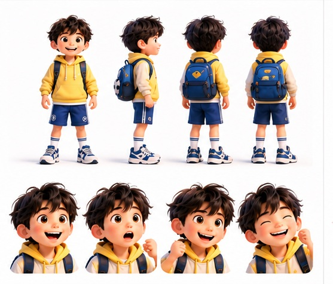
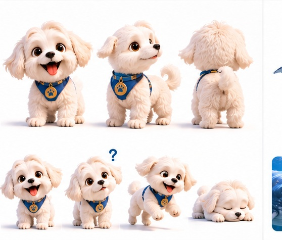
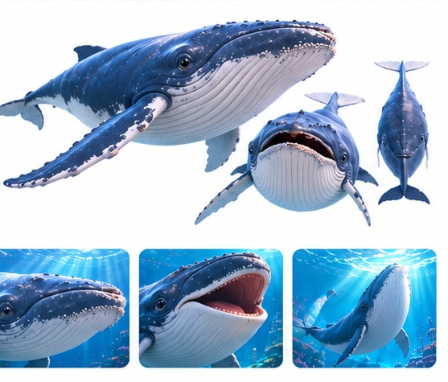

01
기획의도
생성형 AI를 활용해 상상력 넘치는 3D 애니메이션을 제작하고, 어린이들에게 모험과 용기의 메시지를 전달하고자 했습니다.
AI CONTENT / PROJECT 02
생성형 AI로 완성한 3D 애니메이션, 어린이를 위한 모험 이야기
생성형 AI를 활용해 상상력 넘치는 3D 애니메이션을 제작하고, 어린이들에게 모험과 용기의 메시지를 전달하고자 했습니다.
영상 제작 과정에서 캐릭터의 입 모양과 음성, 효과음이 일치하지 않고 배경과 의상이 달라지는 문제가 발생했습니다.
프롬프트에 대사와 동작의 시간을 명확히 지정하고, 캐릭터와 배경의 일관성을 유지하도록 반복 수정했습니다.



AI 영상 제작 · '수상한 엘리베이터' 주요 캐릭터 및 장면